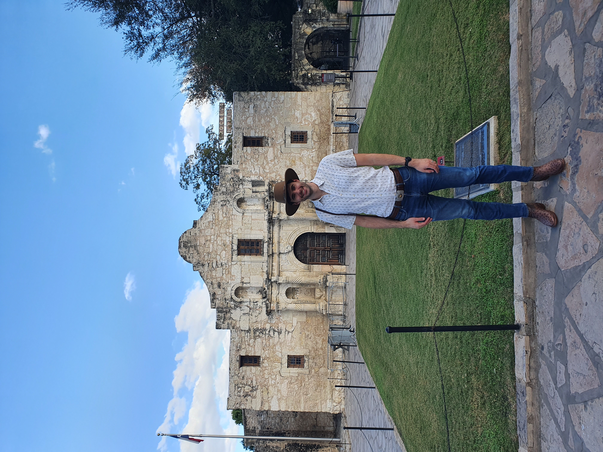

Who am I?

I am Stephen Buskie. I was born and raised in Scotland and love that country with all my heart.
I currently live in Houston Texas with my wife. Understandably, my lifestyle changed somewhat when compared to living in Scotland. My passions outside of work however remain unchanged; spending time in nature, mountain biking, creating videos of our travels and learning new things.
I am an engineer by background and have been fortunate to enjoy a varied career for 9 years with my current employer.
I am seeking new opportunities as I have recently not been treated with the respect I expect from an employer.
Education
MSc Petroleum Engineering with Distinction, Imperial College London
Attained full corporate sponsorship and living stipend
BEng (Hons) Mechanical Engineering, University of Strathclyde
Runner-up of the European Science, Engineering and Technology (SET) awards, in the 'Best Mechanical Engineering Student" category as judged by the Institute of Mechanical Engineers.
The SET Awards provide a showcase for educational excellence by publicly recognising the exceptional achievements of both students and universities. They are Europe’s most high profile event for science, engineering and technology undergraduates.
Awarded The University of Strathclyde Institute of Mechanical Engineers Individual Project Prize
Awarded final year scholarship based on demonstrated academic record
Interests
Energy | Finance | Engineering | Fourth Industrial Revolution
Skills
Management Informaiton | Business Intelligence | Data Analytics | Data Visualisation | Stock Exchange Announcments | Quarterly Reporting | Investor Relations | Executive Reporting | Finance | Audit | Big Data | Reservoir Engineering | Risk Management | Decision Analysis
Tools of the trade
PowerBI | PowerApps | Spotfire | O365 | SAP | Python | Git
Resume
Upstream Production Squad Lead
Lead for bp's global Upstream production reporting.
Reservoir Development Risk Coordinator
Responsible for risk management in bp's reservoir development function.
Executive Production Reporting
Owner of bp's Upstream production management information, including executive reporting.
Projects

Working full time for a global corporation means my work is confidential. I have a couple of projects that are public.
Deplpoyed solutions:
A friend of mine organised a daily walking challenge together with our friends. The goal was to encourage activity while our usual social activities continued to be reduced in 2021. The ensentive to walk was a raffle at the end of the year - each day we acheived 10,000 steps, we would recieve one raffle ticket.
My friend had two issues that I offered support with.
Firstly, googlesheets where we 'bought' our tickets was creating duplicate submissions and thus skewing the raffle ticket entries. Secondly, our friends were asking to see how they were getting on in realtime.
I utilised streamlit, an open source app framework for machine learning and data science projects, to solve these problems all in pure python. Check out the deployed dashboard here: 10k_challenge
Web design:
Having zero HTML, CSS, or Java experience, I sought to showcase my ability to learn nessesary tools to fulfil my needs. In this case, I needed a website.
Using the great templates from the team at HTML5 UP I set fourth building this simple yet effective site while also developing my skills. I hope you find it helpful.
Y'all can reach out
Email: stephenbuskie2@hotmail.com
Address: Houston, TX